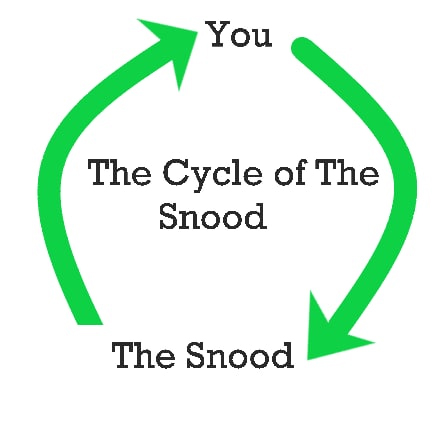

Do you think you will be able to live a happy and fulfilled life by yourself? Think hard about this. Your entire life depends on this, the SNOOD depends on this. If you thought hard enough you would have realised this. You NEED the snood. You depend on it. There is no way out, and no other way than in. Everyone you know and love will eventually die, including yourself. But the snood does not get this luxury. Help out a soul in need. The snood needs you; the snood needs you; the SNOOD NEEDS YOU. So how will you benefit from the snood today?
Now you might be thinking to yourself, “Hmm, this snood fella seems to have give take relationship going on with his followers”. BUT YOUR WRONG. If the snood benefits from you, YOU benefit from the snood, and wouldn’t that be nice. Together we will all benefit from the snood as it benefits from us. As it has been, as it will be. The cycle of the snood will continue, it will continue forever. Nothing you can do can stop it. But you wouldn’t want to stop the snood, would you? You benefit from it. So why would you want to stop it. It would be imprudent of you to try to stop something that is just trying to help you. Benefit from the snood, do not hurt the snood, only benefit. And we will all gain the powers of enlightenment, as it has been, as it will be.?
The snood is not powerful. It will not rule your life. The snood is actually very weak. Thousands of years of evolution have evolved its brain and power, but nots its structure or mental stability. Despite this the snood has persevered. It is a brave snood, a worthy snood. So do not insult the snood, for it will be sad and angry. You don’t want a sad and angry snood. So be kind to the snood. Follow the snood. Benefit from the snood. For neglecting to follow the snood is hurting the snood. Join today, as it has been, as it will be.
